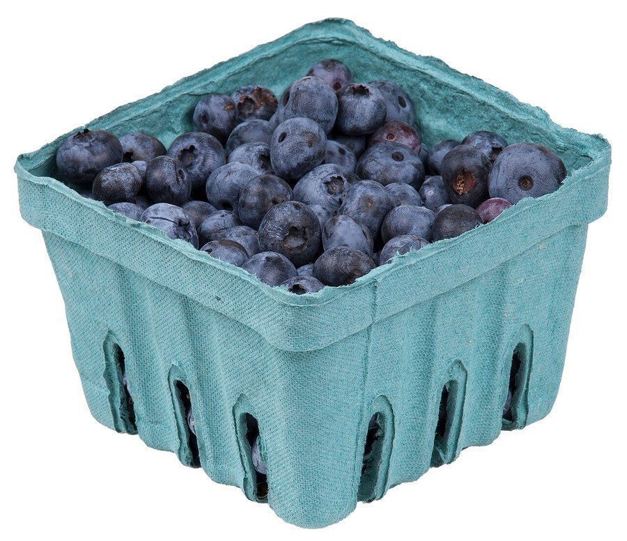

How to Spot Ultra-Processed Foods
"Ultra-processed" gets thrown around a lot without a clear definition. Here's a practical way to actually recognize it on a label, in a grocery aisle, in under a minute.

Key takeaways
- The fastest check is the ingredient list, not the nutrition facts panel.
- Look for industrial ingredients you wouldn't find in a home kitchen: isolates, protein concentrates, emulsifiers, multiple sweeteners.
- Packaging and shelf life alone don't mean ultra-processed. Canned beans and frozen vegetables are only lightly processed.
- One ultra-processed item occasionally isn't the issue. It's the overall share of your diet that matters most.
- Small swaps, not a full overhaul, tend to be the most sustainable way to cut back.
To spot an ultra-processed food, flip it over and scan the ingredient list for industrial additives, isolated protein or starch extracts, multiple types of sugar or sweetener, emulsifiers, and flavor or color compounds you wouldn't keep in a home kitchen. If the list reads like a chemistry set rather than a recipe, it's almost certainly ultra-processed, regardless of how the front of the package is marketed.
This matters because the term gets used loosely, sometimes to describe anything in a box or bag. The actual classification is more specific, and once you know what to look for, it takes seconds to apply.
What does "ultra-processed" actually mean?
The term comes from the NOVA food classification system, developed by researchers to sort foods by the extent and purpose of processing rather than just their nutrient content. Ultra-processed foods are industrial formulations made mostly from substances extracted or derived from foods, like isolated starches, protein concentrates, hydrogenated oils and added sugars, plus cosmetic additives meant to make the product look, taste and feel appealing despite little resemblance to the whole foods it started from.
How is that different from food that's just "processed"?
Processed foods are altered in simpler, more direct ways: canned tomatoes, pressed olive oil, cheese, cured meat, bread made from flour, water, yeast and salt. These change the original food but don't rebuild it from isolated industrial components. Ultra-processed foods take that extra step, combining several extracted ingredients and additives to recreate or enhance a flavor and texture experience that the raw materials alone couldn't produce.
What's the fastest way to check a product?
Turn the package over and read the ingredient list before the nutrition facts panel. A short list of recognizable foods, even with a preservative or two, usually signals minimal to moderate processing. A long list, especially one with ingredients that sound more like a lab report than a pantry, isolated soy protein, maltodextrin, mono- and diglycerides, several different sweeteners, is the clearest sign you're looking at an ultra-processed product.
| What you see on the label | Likely category |
|---|---|
| 3-5 ingredients, all recognizable foods | Minimally processed |
| Oil, vinegar, salt, a spice blend | Processed, not ultra-processed |
| Isolated protein or starch, emulsifiers, flavor compounds | Ultra-processed |
| Multiple sweetener types (syrup, isolate, artificial) | Ultra-processed |
| Artificial colors or flavor enhancers (like certain flavor-boosting additives) | Ultra-processed |
Are long ingredient lists always a bad sign?
Not automatically. A soup with ten whole-food ingredients and a few herbs is still a reasonably simple food, just with more components listed. The length alone is a weaker clue than what's actually in the list. A shorter list built from industrial extracts can be more ultra-processed than a longer list of plain vegetables, broth and spices. Read for substance, not just word count.
A practical example helps here. A loaf of bread listing flour, water, yeast and salt, maybe five or six ingredients, is minimally processed despite being baked and packaged. A different loaf marketed as "soft and fresh for weeks" might list twenty-plus ingredients, including dough conditioners, preservatives and several gums or emulsifiers used to keep texture consistent on a shelf. Same food category, very different processing level, and the ingredient count only tells part of that story.
Does every additive mean a food is ultra-processed?
No, and this is where a lot of confusion comes from. Salt, vinegar, baking soda and vitamin fortification are additives, but they don't push a food into the ultra-processed category on their own. The distinction researchers draw is about cosmetic and industrial additives, ones used mainly to restore flavor, color or texture lost during heavy processing, versus additives that serve a simple, traditional preservation or seasoning role.
Can packaged or frozen food still be minimally processed?
Yes, and this trips people up constantly. Plain frozen vegetables, canned beans with just beans, water and salt, plain yogurt and whole-grain pasta are all packaged and shelf-stable, but only lightly processed. Packaging convenience and ultra-processing aren't the same thing. The ingredient list, not the freezer aisle or the shelf, is what actually determines the category.
Does eating ultra-processed food always mean it's unhealthy?
Not in every single instance, but as a dietary pattern, higher intake of ultra-processed foods is consistently linked in large studies to higher risks of obesity, cardiovascular disease and other chronic conditions. Our related piece on ultra-processed food and brain fog looks specifically at how that pattern connects to day-to-day thinking and energy, not just long-term disease risk. One ultra-processed snack now and then isn't the core issue; a diet where most daily calories come from that category is what the research actually flags.
What are easy swaps that cut ultra-processed intake without a full overhaul?
- Sugary drinks → water, plain tea, or sparkling water with fruit. Usually the single biggest source for most people.
- Packaged snack foods → nuts, fruit, or plain popcorn. Fewer ingredients, similar convenience.
- Flavored, sweetened yogurt → plain yogurt plus your own fruit or a drizzle of honey.
- Ready-made sauces and dressings → a simple homemade version with oil, vinegar and herbs.
- Frozen ready meals → frozen plain vegetables and a simple protein, cooked together.
Do nutrition labels tell the whole story on their own?
Not really. A product can hit reasonable numbers for calories, sugar and sodium on the nutrition facts panel while still being built almost entirely from isolated industrial ingredients. The facts panel answers "how much," while the ingredient list answers "made from what," and for spotting ultra-processing, the second question usually matters more. Pairing both gives the fullest picture, especially for anything marketed as "healthy" or "natural" on the front of the box.
Front-of-package claims deserve their own skepticism. Words like "natural," "made with real fruit" or "high protein" describe a single ingredient or nutrient, not the overall processing level of the product. A snack bar can be genuinely high in protein and still be ultra-processed if that protein comes from an isolated powder bound together with syrups, emulsifiers and flavoring compounds. The marketing claim and the ingredient list are answering different questions, and only one of them actually tells you how the food was made.
Is there a connection between diet quality and how your brain feels day to day?
There's growing evidence of one. Diets heavier in whole foods, vegetables, fiber, healthy fats, tend to track with steadier energy and clearer thinking, while diets dominated by ultra-processed foods are more often linked to sluggishness and brain fog in observational research. Our guide to the Mediterranean diet for beginners walks through one well-studied, whole-food-forward pattern if you'd rather start from a template than count ingredients item by item.
None of this requires perfection. Checking the ingredient list on the handful of packaged foods you actually buy every week, and making one or two swaps where the list looks more industrial than food, covers most of the practical benefit without turning grocery shopping into a research project.
Frequently asked questions
What makes a food ultra-processed rather than just processed?
Processed foods are altered from their natural state in simple ways, like canning vegetables or pressing oil. Ultra-processed foods go further, combining industrially extracted ingredients (like isolated starches, protein concentrates or flavor compounds) with additives to mimic or enhance taste, texture and shelf life, in ways that aren't replicable in a home kitchen.
Is a long ingredient list always a red flag?
Not always, some long lists are just several whole-food ingredients plus a spice blend, but it's a useful first filter. The bigger flag is a long list that includes ingredients you wouldn't find in a home kitchen, like specific emulsifiers, isolated protein powders or multiple sweetener types.
Are all additives a sign of ultra-processing?
No. Salt, vinegar and baking soda are additives too, and they don't make a food ultra-processed. The classification focuses on cosmetic and industrial additives, emulsifiers, flavor enhancers, artificial colors and the like, used mainly to replace qualities lost during heavy processing.
Can packaged food ever be minimally processed?
Yes. Plain frozen vegetables, canned beans, plain yogurt and whole-grain pasta are all packaged but only lightly processed. Packaging and shelf-stability alone don't make something ultra-processed; the actual ingredient list and manufacturing method do.
Does ultra-processed food always mean unhealthy?
Not in every single case, but as a category, diets higher in ultra-processed foods are consistently linked to worse health outcomes in large studies. A single ultra-processed item occasionally isn't the concern; a diet where most calories come from that category is.
How can I eat fewer ultra-processed foods without a big overhaul?
Start by swapping the biggest sources first, usually sugary drinks, packaged snacks and ready-made meals, for simpler versions with recognizable ingredients. Cooking a few more meals from basic ingredients each week has more impact than trying to eliminate every processed item at once.
Do nutrition labels tell you everything you need to know?
They help, but the ingredient list usually matters more than the nutrition facts panel for spotting ultra-processing. A food can have an acceptable calorie and sugar count while still being built almost entirely from industrial ingredients.
Related: Ultra-processed food and brain fog · Mediterranean diet for beginners · High-fiber foods list · Anti-inflammatory foods list